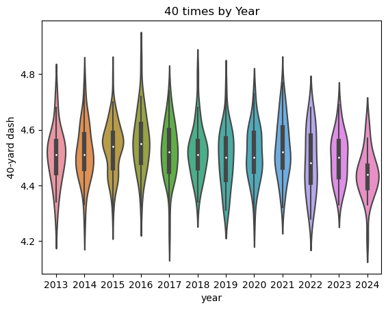
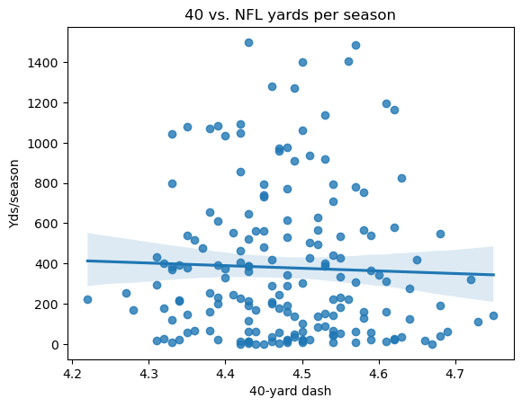
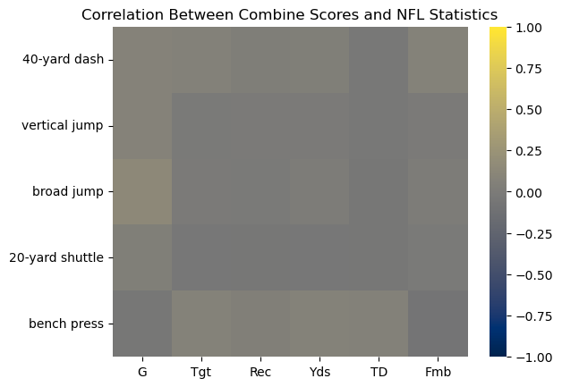
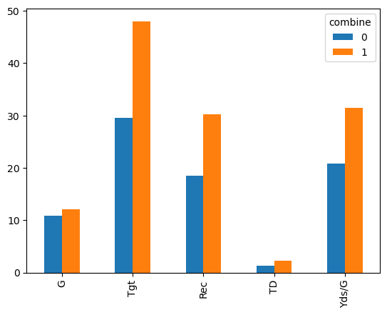

Do Combine Drills Matter?
By Braden Leung | September 11, 2018
Every year, college football's strongest, fastest athletes compete in the NFL Combine to prove their worth to prospective professional teams. It is headlined by one event—the 40-yard dash. Dominated by receivers, the 40 shows NFL teams that these wideouts have the blazing hot speed to separate from defenders, get open, make catches, and win games. This year, John Ross’ 7-year record of 4.22 was edged out by Texas receiver Xavier Worthy's incredibly swift 4.21. And this isn’t some anomaly, receivers are getting faster as a whole, LSU wideout Brian Thomas Jr. ran a 4.33 and Worthy’s teammate Adonai Mitchell ran a 4.34. Both are 6’4”. The average 40 time based on the Combine data is now well under 4.5 and even the slowest receivers are running in the 4.6s. Since 2013, receiving has gotten significantly faster, with the average 40 time decreasing by around a tenth of a second. The graph below shows the distribution of 40 times each year from 2013 to 2024. The white dot represents the median time, the black box represents the middle 50% of all times for that year while the ends represent the highest and lowest times for that year.
While receivers are no doubt getting faster, is this making them better? Do receivers with better 40 times go on to rack up more yards and score more touchdowns? Intuitively, it seems like a faster 40-time would mean a receiver has more speed and quickness, allowing them to gain more separation. However, a player's 40 speed is very different from their speed in pads.
I gathered NFL receiving data over the last 3 years (Football reference), which I aggregated into single-season averages, and NFL Combine data (FantasyPros) since 2013, which includes almost all the receivers in the sample above. I graphed every player’s 40 times against their yards per season to create the graph below.
There is almost no correlation between 40-time and yards. We can actually see that receivers with very middling 40-times are the ones who have the most yards per season from 2021-2023. However this graph shows that a player’s 40 time has very little influence on their yards per season in the NFL. If we look beyond just yards and 40-times and expand our search to all Combine statistics and receiver stats we get this correlation matrix. Each block represents the correlation between a combine drill (on the Y-axis) and an NFL receiving statistic (on the X-axis). Yellow represents a strong positive correlation, while blue represents a strong negative correlation. A gray box means there is almost no correlation between the two variables.
Almost every box is gray, meaning there is a very minimal positive or negative correlation between any of the combined measurements and the receiving statistics. Thus, these combined athleticism measurements do not alone predict NFL statistical success for receivers. However, receiver height, weight and hand size measurements (used to calculate Relative Athletic Score) and Pro Day statistics were inconsistent and difficult to access so I did not include them in these predictions. I also did not analyze all positions—I chose receivers as they have the most available combined data and performance statistics. However I did find one thing related to the Combine which clearly predicts NFL performance: their ability to attend the Combine itself. Receivers who were unable to attend the Combine—whether due to the lack of an invitation, purposefully skipping drills, or an injury—performed significantly worse in the NFL. This may be due to perceived athletic or skill limitations or their professional coaching staff not giving them chances. Below is a graph of all receiving statistics from receivers who attended the combine (1), versus receivers who did not (0).
The Combine—including the 40-yard dash does not significantly predict the overall performance of NFL receivers. Instead, the largest indicator of success for receivers regarding the Combine is actually whether they attended the combine or not. Receivers who are invited to and attended the Combine perform significantly better in every major receiving category. The no combine section is also pushed upwards by the 2021 class (including Ja’Marr Chase, Devonta Smith, and Jaylen Waddle) as the combine was canceled that year due to COVID-19. While combine scores for receivers don’t necessarily predict NFL stats, receiving an invite to the combine does indicate that the prospect will have a more successful NFL career. So while Xavier Worthy’s blazing time may have set a Combine record, it does not mean he is any more likely to succeed in the league.